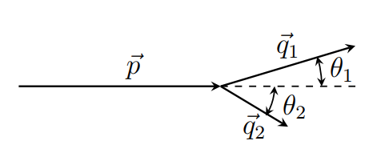

Y23 (2023) — English translation
Solids (such as metals) are a crystal lattice of positively charged ions between which electrons move. Electrons interact with the crystal lattice and with each other, so to accurately describe the properties of a solid it is necessary to solve an extremely complex multiparticle problem. However, in some cases it turns out that the entire influence of interaction comes down to the fact that instead of electrons in the crystal, particles weakly interacting with each other propagate, the equations of motion of which differ significantly from the equations for free electrons. Such particles that practically do not interact with each other are called quasiparticles. For simplicity, they are also usually called electrons. The properties of quasiparticles are determined by the parameters of the crystal lattice and the magnitude of the interaction between electrons and ions. For an electron (quasiparticle), the dependence of energy on momentum $\varepsilon(\vec{p})$ can have a very complex form. Then the connection between velocity and momentum is given by the relations $$ v_x = \frac{\partial \varepsilon}{\partial p_x}, \quad v_y = \frac{\partial \varepsilon}{\partial p_y}, \quad v_z = \frac{\partial \varepsilon}{\partial p_z}. $$Скорость понимается в обычном смысле — как производная соответствующей координаты по времени. Выражение для силы, действующей на электрон во внешних электрических и магнитных полях такое же, как и в случае движения в вакууме и уравнения движения имеют вид $$ \frac{d\vec{p}}{dt} =\vec{F}. $$Заряд электрона равен $-q$, $q > 0$. В этой задаче вам предстоит рассмотреть некоторые случаи движения квазичастиц (электронов) с заданной зависимостью $\varepsilon(\vec{p})$. In Part C, you can study another type of quasiparticle - phonons, which are vibrations of the crystal lattice.
In this part we will consider the motion of an electron in a constant magnetic field $\vec{B}$.
We will further assume that the magnetic field of magnitude $B$ is directed along the $z$ axis, and the electron moves in the $xy$ plane.
Let now, in addition to the magnetic field, the electron from B2 be subject to an electric field $E$ directed along the axis $x$. The initial values of the coordinate and momentum of the electron are zero.
The electric field is again zero. The dependence of electron energy on momentum has the form $$\varepsilon = \varepsilon_0(1 - \cos (ap_x)) + \frac{p_y^2}{2 m_y}.$$
The presence of open electron orbits significantly changes the properties of the material. In particular, such orbits determine the behavior of resistance in strong magnetic fields.
Another type of quasiparticle found in solid state physics is phonons, which are vibrations of a crystal lattice. Their properties are similar to photons, but due to the characteristics of the lattice, the dependence of energy on momentum is nonlinear. Let the dependence of energy on momentum for a phonon have the form $$\varepsilon(p) = u p + \alpha p^3.$$Здесь $u$ — скорость звука в кристалле, постоянная $\alpha$ задает величину дисперсии. В этой части будем считать, что второе слагаемое много меньше первого, $\alpha p^3 \ll up$.
В отличие от фотона, фонон при определенных условиях может распасться на два фонона. Исследуем этот процесс. Пусть импульс исходного фонона равен $p$, и он распадается на два фонона с импульсами $q_1$ и $q_2$, которые движутся под углами $\theta_1$, $\theta_2⟦ M9⟧p$, и он распадается на два фонона с импульсами $q_1$ и $q_2$, которые движутся под углами $\theta_1$, $\theta_2$ with the direction of motion of the original phonon.

Next we will consider the case $\alpha \ne 0$. It turns out that in the case of a small momentum of the initial phonon $p$, the angles $\theta_1$, $\theta_2$ are also small.
Source: https://pho.rs/p/3148